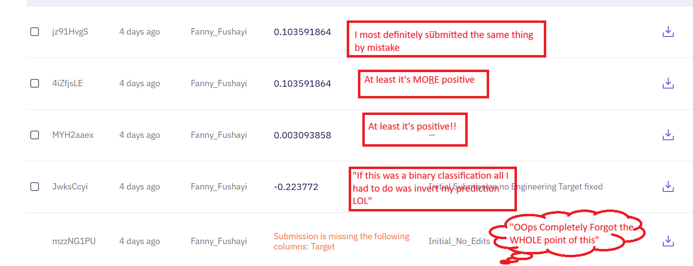
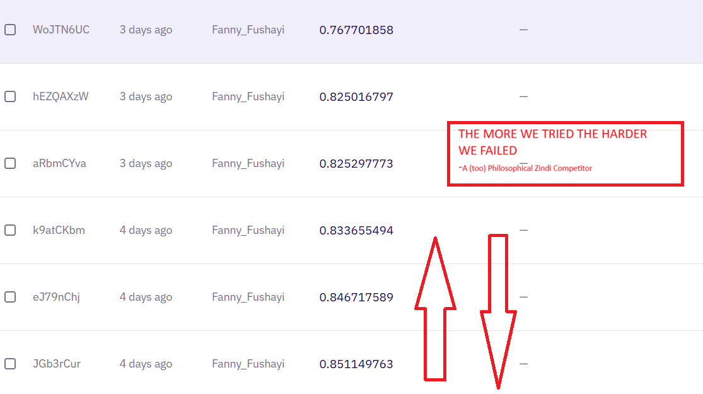
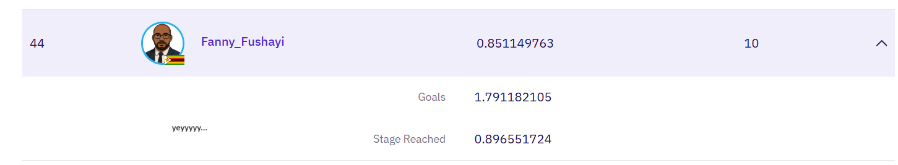

I don't know soccer. But I know data. When I opened the Zindi World Cup dataset, my first reaction was pure confusion. What does each row mean? Which columns matter? And most importantly – how do I turn this into a submission that doesn't get a negative score?
This is the raw story of my 24-hour sprint: the mistakes, the breakthroughs, and the moment I climbed to position 56 on the leaderboard. Built on a simple philosophy: start stupid, then iterate.
Full notebook: All code, experiments, and messy plots are in the Colab below.
Open the Colab NotebookMy first instinct was to drop everything older than 10 years. After all, those players aren't playing anymore, right? But then I realized that World Cup squads have long careers, and historical performance carries real signal. Plus, factors like population and economic development aren't directly in the dataset, but they're embedded in the historical results.
I wanted to give more weight to recent tournaments while still using the full history. That tension between recency and tradition became the core of my feature engineering.
matches_df['tournament_id'].unique().tolist()
This was my first "notable command" after a long pause. I had forgotten half the pandas syntax.
Before any feature engineering, I built a dead-simple baseline with just a few aggregate stats per team:
This gave me a benchmark. If my fancy model couldn't beat this, I knew I was overcomplicating things.
I hit a wall asking myself: should I modify the train set directly? Create a separate feature table? Merge everything? After staring at the screen for 20 minutes, I realized my job was to add features to the training data, not build a separate dataset from scratch.
Once that clicked, I could move forward. But then came the real pain.
Getting a valid submission took hours. Negative scores, class mismatch errors, mapping failures. With only 10 submissions per day, I was burning them fast.

The painful first few attempts – all negative scores and mapping errors
What went wrong:
After fixing these, my model finally started learning something real.
I realized I had enough information to predict when a team would be knocked out, but not enough to guess exact scores. So I doubled down on stage prediction and used goals as a secondary target.
This separates regulars from newcomers. Regular participants are more likely to escape the group stage.
Wins, goals, win rates – aggregated over full history gives stability.
Instead of a simple average of the last 3 World Cups, I used exponential decay:
Then I computed a weighted average of goals, win rate, etc. across all tournaments. This replaced both "all-time" and "recent" stats with one principled signal.
After applying the decay, my score shot up. I went from negative to 0.854 on the public leaderboard and climbed to position 44 out of 781 competitors.
Here's an excerpt from my predictions. Some are reasonable, others were my model's way of saying "maybe this year":
Spain and Sweden as champions? That's optimistic. But that's what the model learned from the weighted historical data.
The real issues were noisy data (non-World Cup years mixed in) and insufficient training categories for later tournament stages. I suspect the true challenge was filtering that noise and engineering better features – but I ran out of time.
Key insight: All my optimizations improved the classification problem (stage prediction) while simultaneously making the regression problem (goal scoring) worse. It was a frustrating trade-off that I couldn't quite resolve.

More feature engineering led to interesting trade-offs between objectives

Final position: #56 on the leaderboard
Side note: I suspect there are time travelers amongst us. How am I being rated and ranked for a competition based on an event that hasn't actually happened yet? Either Zindi is from the future, or someone's gaming the system with advance knowledge. Suspicious.
I went from complete bewilderment to a respectable position on the leaderboard. The key was understanding that domain knowledge matters – even without knowing soccer, historical context plus recent performance plus smart features can get you surprisingly far. Sometimes you don't need to be a hero. Just above zero is enough.
Acknowledgments: Special thanks to Tawanda Mabvira for the invaluable discussions on feature engineering approaches and for helping decode football terminology and competition dynamics that were outside my domain knowledge.